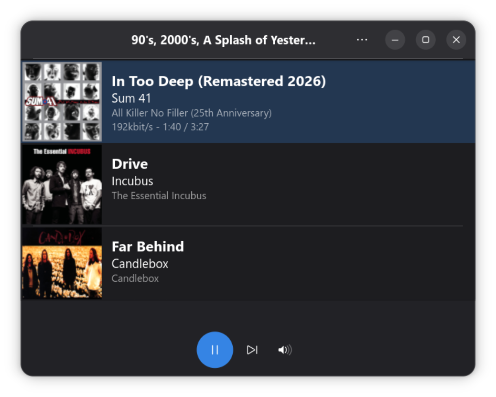

Elpis is a maintained fork of Pithos. It runs on GTK 4 and libadwaita, integrates with GNOME media keys, MPRIS, last.fm, and the sound menu, and adds features that were always in the Pandora API but never made it into upstream Pithos.
News
Elpis v1.6.3 released. The first release of the Elpis line. See the changelog for details.
Features
- Play / Pause / Skip / Thumbs / Tired of this song
- Station switching, creation, deletion, sharing
- Genre station browser
- “Why is this playing?” — Pandora’s track-explanation traits
- Station seed manager (song, artist, genre seeds)
- Bookmarks viewer with delete
- Album art with cover art cache
- Media keys, MPRIS, last.fm scrobbling
- Desktop notifications on track change
- Secure credentials via libsecret / system keyring
- 10-band equalizer (plugin)
- Screensaver pause / inhibit (plugins)
- Proxy support
- Light and dark themes, platform-native UI
Install
With Flatpak recommended
The repo is self-hosted because Elpis is too new to meet Flathub’s submission bar.
flatpak remote-add --if-not-exists elpis https://davidmcfarlin.github.io/elpis/repo/
flatpak install elpis io.github.DavidMcFarlin.Elpis
flatpak run io.github.DavidMcFarlin.ElpisFrom source
Requires meson, ninja, GTK 4 ≥ 4.10, Python 3.10+, PyGObject, GStreamer 1.0, libsecret. Optional: pylast for last.fm scrobbling.
meson setup --prefix=$HOME/.local build
meson install -C build
glib-compile-schemas $HOME/.local/share/glib-2.0/schemas
elpisLinks
FAQ
Why “Elpis”?
In Greek mythology, Pandora opened a jar (in Greek: pithos) and released all the evils into the world. Elpis — the spirit of Hope — was the only thing that remained inside. Elpis is the continuation of Pithos, kept alive after upstream development stalled.
How is this different from Pithos?
Elpis modernizes Pithos for current Linux desktops: GTK 3 → GTK 4 with a platform-native libadwaita interface in light and dark themes, Flatpak runtime bumped to GNOME 50, expired internal CA cert removed, and network error handling updated for modern Python. New features include a discoverable menu, a one-click “New Station” entry point, a genre browser, a station seed manager, station sharing, a bookmarks viewer, and “Why is this playing?” — all exposing functionality that was always in the Pandora API but never in the upstream UI.
Will my Pithos settings migrate?
No. On first launch you’ll be prompted to sign in to Pandora again; credentials are saved to the system keyring via libsecret, so you only enter them once.
Why isn’t Elpis on Flathub?
Flathub requires a project to meet activity and quality bars that a brand-new fork of an unmaintained project cannot meet. Elpis is self-hosted on GitHub Pages instead. The repo is signed with a maintainer GPG key, so flatpak install verifies the build automatically.
Will my changes go back to Pithos?
Elpis is maintained independently. Upstream Pithos hasn’t had a release since March 2024. Contributions to Pithos are still welcome on their own terms; this project simply does not depend on review bandwidth there.